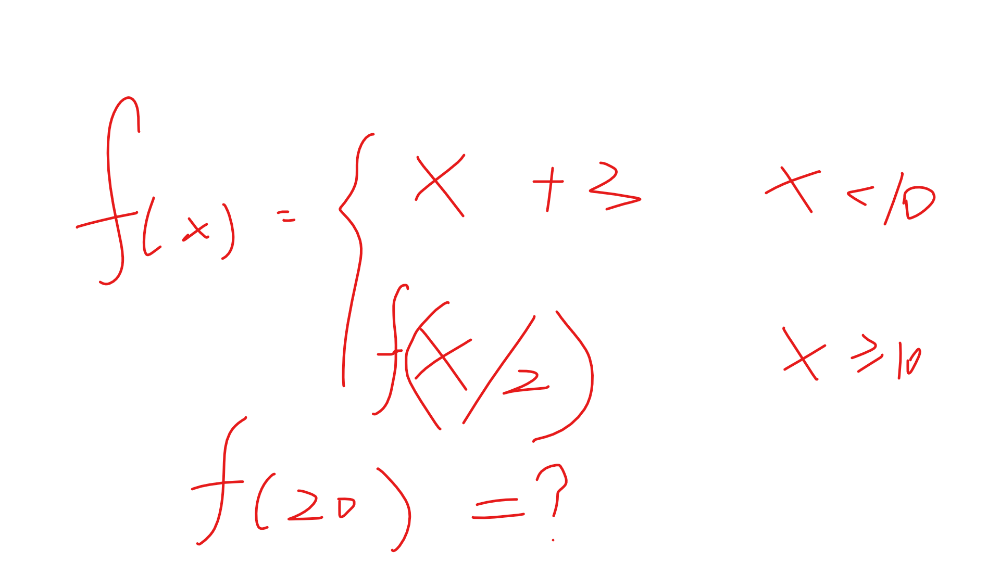
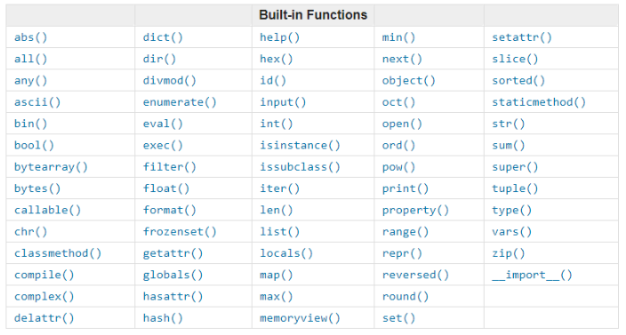

#12 Python函数
矩形的面积 S = ab，只要知道任一矩形的的长和宽，就可以带入上式求得面积。这样有什么好处呢？一个公式，适用于全部矩形，一个公式，重复利用，减少了大脑的记忆负担。像这类用变量代替不变量的思想在数学中称为函数，Python中，也有类似的思想！
一、什么是函数
在数学中，函数是指输入集合与输出集合存在一种特定的映射关系，这种映射关系可以被广泛使用。在Python中，函数是指将一定量的代码块使用一个指定的函数名通过特有的语法封装起来的代码块。
函数优点：
- 大大减少重复代码
- 可以重复使用
- 程序具有扩展性
程序代码结构性提高
二、函数初始化
现在是不是觉得函数特🐮，来一起看看如何定义一个函数吧：
1 | In [1]: def func(): # func是函数名，可随意更改 |
看完上面定义方法，其实可以发现其定义语法规则：
- 函数初始化以关键字 def 开头，之后接函数名和一对圆括号，再加一个冒号
- 函数的内容使用缩进
但是，这并不是一个标准的函数写法，标准的函数应当还有一个非常重要的部分，那就是函数的说明，放在函数名的下面，用三引号引起来，例如：
1 | In [2]: def func(): |
三、函数返回与调用
函数的返回：
函数是可以将结果返回的，如果想要获取函数的执行结果，可以使用关键字 return 将其返回，例如：
1 | In [3]: def add(): |
函数在执行过程中一旦执行到return语句，就会结束函数，并返回
函数中如果没有return语句，则默认执行完毕后返回 None
函数的调用：
一个函数定义完成后，必须要又相应的调用语句才能够执行，否则就和没写一样━━(￣ー￣|||━━，调用方法如下：
1 | In [4]: def tell_name(): |
函数的递归：在函数内部返回调用自己
大家一定做过这种类型的题目：

解题步骤：f（20）=f（10）=f（5）= 5 + 3 = 8，可以看到，当x>=10时，就是自己调用自己，这就是递归，Python代码可以这样写：
1 | In [20]: def func(x): |
函数递归的规则：
- 必须有一个明确的结束条件
- 每次进入递归后，运算规模比上一次小（否则无限大，问题无法求解，内存会被占满）
四、函数参数
在初始化函数时，可以令函数使用参数，如下：
1 | In [6]: def add(x,y): # 函数拥有参数时，将其写在括号里即可 |
形参：只是一个名字，不占用真实内存空间
1 | In [6]: def add(x,y): # x，y就是形参，只是一个名称而已，并不占用内存空间 |
实参：本质是一个变量，占用真实内存空间
1 | In [7]: add(1,5) # 1，5是实参，本质为 在调用函数时，将 x=1，y=5传给add函数，相当于两变量，占用内存资源 |
按位置参数调用：按形参的位置调用
1 | In [8]: def print_num(a,b,c): |
按关键参数调用：调用函数时，直接参数赋值，而不按位置赋值
1 | In [8]: def print_num(a,b,c): |
注意：在调用时，位置参数可以和关键参数混合使用，但是位置参数一定在关键参数之前才行：
1 | In [8]: def print_num(a,b,c): |
默认参数：在初始化函数时，可以给形参指定默认值，例如：
1 | In [14]: def print_num(a,b,c=5): # 指定c的默认值为5 |
在调用时，如果不需要改变c的值就可以省略不写，如果需要改变其值，调用时重新赋值即可：
1 | In [15]: print_num(1,2) # 使用默认参数 |
非固定参数：有时函数在初始化时不确定要传入参数的数量，这时就要使用非固定参数了
1 | In [22]: def print_num(a,b,c): |
*args：将传入的多余参数构造成一个元组
1 | In [26]: def print_num(a,b,c,*args): |
**kwargs：将传入的多余参数构造成一个字典
1 | In [28]: def print_num(a,b,c,**kwargs): |
最完美的办法：args和*args一起使用
1 | In [30]: def print_num(a,b,c,*args,**kwargs): |
五、函数变量
在Python中，有两种变量：全局变量和局部变量
全局变量：在整个程序中都可以访问的变量，分配在全局数据段，在程序开始运行的时候被加载，生存周期从程序开始到程序结束，也就是说，全局变量被定义在主程序中
局部变量：存在于某个函数或类中，只有在函数或类中才能够被访问，只分配在程序的堆栈中，生存周期从函数开始到函数结束，也就是说，局部变量被定义在子模块中
1 | quan_jv_bian_liang = 555 |
上面程序的运行结果：
1 | E:\PythonProjects\跟着MS学Python>python -u "e:\PythonProjects\跟着MS学Python\#12\1.py" |
继续修改程序，验证全局变量是否可以在函数中被访问：
1 | quan_jv_bian_liang = 555 |
继续修改程序，验证全局变量是否可以在函数内被修改：
1 | quan_jv_bian_liang = 555 |
可以看到在函数内并不能真正的修改全局变量，如果非要在函数内修改全局变量，也不是不可以：
1 | quan_jv_bian_liang = 555 |
六、高阶函数
当函数的参数是函数时，这个函数被称为高阶函数=====(￣▽￣*)b
1 | In [33]: def dunc(x): |
七、匿名函数
针对简单功能的函数，可以不显式的指定函数框架，使用匿名函数即简洁，又可以实现其功能：
1 | In [38]: def func(x): |
可以看到匿名函数的定义语法：函数名 = lambda 变量 : 函数体
八、内置函数
在Python中，有许多内置函数可以直接供我们使用，之前的讲解其实已经接触很多了，现在来看看全部的内置函数：
